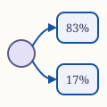

Audit by David Ryan using Claude (Opus 5) on 2026‑09‑22 against block 26,032,914
Contract on Ethereum mainnet: Permit2
An ERC-20 token moves only when its owner transfers it, or when a contract the owner has approved transfers it for them. Approvals are transactions, and cost gas. To save users that gas cost and inconvenience, most applications ask for an unlimited approval that never expires. But those approvals are security hazards, because if the contract being approved has a flaw or is hacked by say replacing a proxy implementation with a malicious implementation, an attacker can take the owner's whole balance of that token.
Uniswap Labs deployed Permit2 in November 2022 to change that pattern. A user approves Permit2 once for each token. After that, an application asks the user for a signature instead of a transaction. Permit2 turns the signature into an allowance with an amount and an expiry date. Signing costs the user no gas. The user pays for one approval per token, and each application loses access when its allowance expires.
Uniswap's own router spends tokens through Permit2, and so do other applications. The contract has received 712,764 transactions on Ethereum mainnet, and it sits at the same address on every chain where it is deployed. It never takes custody of a user's tokens. Each transfer goes straight from the owner to the recipient.
Permit2 is immutable. It has no owner, no upgrade path and no pause switch, so nobody can change what it does. Its deployed code matches the verified source byte for byte.
This review found no exploitable vulnerability. The four medium findings describe what a wallet or an integrator can get wrong. One of them did not exist when Permit2 was deployed. EIP-7702, live since May 2025, lets an ordinary account carry code. Permit2 picks its signature check by asking whether the signer has code. About one in six of the accounts now signing permits carry code this way, so Permit2 checks them as though they were smart contract wallets.
Permit2 has no exploitable vulnerability. The contract is immutable, gives no one a privileged role, and answers exactly the 15 selectors its interface
declares. Its runtime bytecode matches the verified source byte for byte. It contains one CALL, and that call always uses the transferFrom selector. The contract can therefore move tokens only for an owner who authorised the move.
Four findings rated Medium describe what an integrator or a user can get
wrong. Three concern a gap between what Permit2 appears to do and what it does. lockdown looks like a panic button, but it does not cancel a signature the spender already holds. A permit's expiration is independent of the sigDeadline on the signature that created it. In the sample of live permits, 70.5% grant an unlimited allowance, and the median allowance lasts 30 days. A transfer of a token address that holds no code reports success and still reduces the allowance.
The fourth arose after Permit2 was deployed. Permit2 chooses between
ecrecover and ERC-1271 by reading one EXTCODESIZE.
In November 2022, that test sorted externally owned accounts from contract wallets for good. EIP-7702 ended that. An
account can now gain or drop code in a single transaction. Of the addresses
that signed a Permit2 permit over 24 hours, 16.6% carry a delegation, about one in six.
The section How Permit2 decides who
signed gives the proof, along with a signature that ecrecover
verifies correctly and Permit2 refuses.
Nothing here can be patched, because the contract is immutable and has no owner. The integration checklist is the part of this document most worth acting on.
| ID | Severity | Finding |
|---|---|---|
| M-1 | Medium | lockdown does not cancel a signature the spender already holds |
| M-2 | Medium | expiration carries no relation to sigDeadline |
| M-3 | Medium | Signature verification branches on EXTCODESIZE, which EIP-7702 made mutable |
| M-4 | Medium | transferFrom reports success for a token address that holds no code |
| L-1 | Low | One permit has three valid signature encodings |
| L-2 | Low | Tokens sent to Permit2 can never be recovered, and $133,147 is already stranded |
| L-3 | Low | expiration = 0 means the current block only |
| L-4 | Low | The zero-address recipient behaviour in the documentation is not implemented |
| I-1 | Info | A partial spend consumes the whole unordered nonce |
| I-2 | Info | The EIP-712 domain omits version, and the contract answers no eip712Domain() |
| I-3 | Info | invalidateNonces advances a nonce by at most 65,535 per call |
| I-4 | Info | The caller supplies the witness type string unchecked |
Counts: 0 critical, 0 high, 4 medium, 4 low, 4 informational.
| Address | 0x000000000022D473030F116dDEE9F6B43aC78BA3 |
|---|---|
| Deployed | Block 15,986,406, 2022-11-17 01:17:59 UTC, 3.85 years before this review |
| Creation tx | 0xf2f1fe96c16ee674bb7fcee166be52465a418927d124f5f1d231b36eae65d377 |
| Transaction sender | 0xd32ff78579352ca78f416120a9f68b65c410871b, an externally owned account |
| Actual deployer | 0x4e59b44847b379578588920cA78FbF26c0B4956C, the deterministic deployment proxy, by CREATE2 |
CREATE2 salt | 0x0000000000000000000000000000000000000000d3af2663da51c10215000000 |
| Compiler | solc 0.8.17+commit.8df45f5f, optimiser enabled at 1,000,000 runs, EVM target london |
| Runtime code | 9,152 bytes: 9,140 executable plus a 12-byte metadata trailer |
| Metadata trailer | a164736f6c6343000811000a, the compiler version only. The build set bytecodeHash to none |
| Against verified source | Identical, all 9,152 bytes |
| Instructions | 4,278 decoded, zero unknown opcodes |
| Dispatch table | 15 selectors, matching the declared interface exactly |
| Upgrade-shaped opcodes | None. 0 DELEGATECALL, 0 CALLCODE, 0 SELFDESTRUCT, 0 CREATE, 0 CREATE2 |
| External calls | 1 CALL at offset 6392, 2 STATICCALL at offsets 8478 and 8902 |
| Proxy slots | EIP-1967 implementation, EIP-1967 admin and the OpenZeppelin legacy slot all read zero |
| Authority | None. No owner, admin, authority, wards, paused or live getter responds |
| Storage slots | 0 nonceBitmap, 1 allowance. Both confirmed against the public getters |
DOMAIN_SEPARATOR() | 0x866a5aba21966af95d6c7ab78eb2b2fc913915c28be3b9aa07cc04ff903e3f28 |
| ETH held | 0. No function is payable |
| Tokens held | 35 token contracts hold a balance for this address, $133,147 at 2026-09-22 prices |
| Transactions received | 712,764 |
The EIP-712 domain separator and the chain ID that produced it are
immutable, so both sit in the code rather than in storage.
I read the runtime bytecode from mainnet over JSON-RPC and disassembled it
with an opcode walker that skips PUSH immediates. Claims about
what the contract cannot do rest on that disassembly rather than on reading
the source. Every figure in the table above came from one batched request
pinned to block 26,032,914, so the numbers reconcile with each other.
Four points of method affected the results.
The deployed code and the verified source agree exactly.
This match often fails, so it is worth stating. I did not recompile the source. I compared
the 9,152 bytes returned by eth_getCode against the deployed
bytecode recorded with the verified source, and every byte matched.
Behavioural findings were proved by running them. Where a finding says that Permit2 writes a value or accepts a signature, I ran the call against live mainnet state. Each run used eth_call with a state override. The override places a small probe contract at an unused address. The probe calls Permit2 and returns what Permit2 wrote. Nothing was broadcast and no transaction was signed. Each result below gives the value returned.
ECDSA signatures were generated locally. Findings
L-1 and M-3 need real signatures over
real EIP-712 digests. I wrote secp256k1 signing in about forty lines, and checked each signature with the ecrecover precompile at 0x01 before I used it.
One test key exposed the EIP-7702 problem by accident. My
first signing key was the well-known test value 0x1111…1111,
whose address is 0x19e7e376e7c213b7e7e7e46cc70a5dd086daff2a.
Permit2 rejected every signature it made, but the precompile at 0x01 recovered the correct signer from the same inputs. The address carries a 23-byte EIP-7702 delegation designator on mainnet, so
Permit2 never reached ecrecover. The section
How Permit2 decides who signed
sets out what follows. Two further well-known test keys carry a delegation to
the same contract.
The contract holds two independent systems that do not interact.
AllowanceTransfer stores an allowance per owner, token and
spender, packed into one word as a uint160 amount, a
uint48 expiration and a uint48 nonce. A spender
draws against it repeatedly until the amount runs out or the expiration
passes. Nonces here run in strict sequence.
SignatureTransfer stores no allowance at all. Each signature authorises one transfer and is spent by setting a bit in a per-owner bitmap. Nonces here are unordered, so a user can sign many permits and spend them in any order.
Permit2 never holds a token on a user's behalf. Every transfer it performs is
token.transferFrom(owner, recipient, amount), which moves value
directly between two other accounts.
Everything Permit2 does rests on one function.
SignatureVerification.verify takes a signature, a digest and a
claimed signer, and it reverts unless the signature belongs to that signer.
It chooses between two methods, and this choice is the subject of finding M-3.
if (claimedSigner.code.length == 0) {
// 65-byte or 64-byte ECDSA, then ecrecover
} else {
bytes4 magicValue = IERC1271(claimedSigner).isValidSignature(hash, signature);
if (magicValue != IERC1271.isValidSignature.selector) revert InvalidContractSignature();
}The disassembly has the same shape, and it shows that no other path exists.
8394 DUP5
8395 EXTCODESIZE <- claimedSigner.code.length
8396 PUSH2 0x222e
8399 JUMPI <- non-zero jumps to the ERC-1271 branch
8401 PUSH1 0x41
8404 SUB <- signature.length - 65
8405 PUSH2 0x21ac
8408 JUMPI <- not 65, try the 64-byte compact form
...
8475 PUSH1 0x01
8477 GAS
8478 STATICCALL <- the ecrecover precompile at 0x01
...
8901 GAS
8902 STATICCALL <- isValidSignature on the claimed signer
8918 PUSH32 0xffffffff00… <- mask for the magic value comparison
The contract holds exactly one EXTCODESIZE and exactly two
STATICCALLs. One reaches the precompile. The other reaches the
claimed signer. No third route into signature validation exists.
When Permit2 shipped, an address either held code forever or held none
forever. EXTCODESIZE therefore sorted accounts into two permanent
classes, and the branch was a correct and cheap way to support contract
wallets.
EIP-7702 made that sorting temporary. An account can now install a 23-byte
delegation designator with one transaction, and remove it with another. The account keeps its private key and keeps signing. But EXTCODESIZE no longer returns zero, so Permit2 stops using ecrecover for it.
I measured how common this has become. Over 7,200 blocks, about 24 hours ending at block 26,087,917, 3,155 distinct addresses signed a Permit2 permit. I read each address's code at the last block of the window.
| Account shape at the end of the window | Signers | Share | Branch taken |
|---|---|---|---|
| No code | 2,627 | 83.3% | ecrecover |
| EIP-7702 delegation designator | 524 | 16.6% | ERC-1271 |
| Deployed contract | 4 | 0.1% | ERC-1271 |
About one in six live Permit2 signers now takes the branch written for smart contract wallets. None of those 524 is a deployed contract wallet.
The share moves with the window. The first measurement, over 541 blocks ending at block 26,032,944, found 67 of 267 signers delegated, or 25.1%. Two 12-hour windows on 2026-09-30 found 14.4% and 20.6%. The 24-hour figure is the one to quote.
The Approval event records a direct approve call, with no signature. Over the same 24 hours it shows 1,327 distinct callers, and 74.7% of them carry a delegation. The share is higher because these accounts send their own transactions.
It is not. I called isValidSignature(bytes32,bytes) on all 1,489
delegated Permit2 users in the 24-hour window, Permit and
Approval together, passing a 65-byte signature of arbitrary
bytes. 816 rejected it by reverting, and 673 returned a value other than the
ERC-1271 magic value. None accepted it.
The risk lies in what an integrator may assume about an account. M-3 states it.
A spender may hold a permit that the owner signed as a plain EOA. If the owner then delegates, Permit2 sends that old signature to the delegate contract. Whether it still works depends on the delegate.
I tested every delegate contract used by the Permit signers in
the 24-hour window, 18 in all. A fresh key signed a PermitSingle
as a plain EOA. I submitted it by eth_call, first with no code
at the signer, then with each delegate's designator placed there by state
override. Each delegate saw one signature whose recovery byte v
is 27 and one where it is 28. A signature from a different key was also
submitted, and every delegate rejected it, so an accept means the delegate
checked the account's own key.
| Delegate behaviour | Delegates | Delegated signers | Share |
|---|---|---|---|
| Accepts the plain signature | 13 | 507 | 96.8% |
Accepts it only when v is 27 | 2 | 10 | 1.9% |
| Rejects it | 3 | 7 | 1.3% |
The 13 that accept include MetaMask's EIP7702StatelessDeleGator
(382 signers), Uniswap's Calibur, Coinbase's EIP7702Proxy and
Simple7702Account. Each checks that the account's own key made
the signature, which is the question ecrecover answered before.
The three that reject are Biz, ZeroDev's Kernel and
one version of Alchemy's SemiModularAccount7702. Each wraps the
hash in its own EIP-712 domain or expects its own signature format.
Biz shows the effect in both directions. The plain signature
fails under Biz. A signature over the Biz-wrapped
hash passes under Biz, then fails once the delegation is gone.
For these accounts, delegating cancels every permit signed before it, and
removing the delegation revives them. The Kernel result rests on
its source, where every path wraps the hash. The Alchemy result rests on its
revert, ValidationSignatureSegmentMissing. Neither was tested
with a real account's storage.
The two that accept only v = 27 are unverified contracts at
0x490aac77c960b0569c8e446ac7e12490bd44ca1d and
0xa845c74344fc9405b1fcf712f04668979573c1bf. Each rejects every
valid signature with v = 28, which is half of all signatures.
The defect sits in those delegates.
lockdown does not cancel a signature the spender already holds MediumAffects users who revoke with lockdown alone, and wallets that offer it as a revoke button.
lockdown is documented as "a 'lockdown' of the sender's Permit2
identity by batch revoking approvals". In practice it writes one field.
allowance[owner][token][spender].amount = 0;
emit Lockdown(owner, token, spender);
The expiration and the nonce stay as they were. A spender holding a signed but
unsubmitted PermitSingle at the current nonce can submit it
after the lockdown. Permit2 then restores the allowance in full.
Evidence. Two runs against mainnet state at block
26,032,914. The first shows what lockdown writes. A probe contract, acting as the owner, approved a spender, called lockdown, and read the allowance back.
| Step | amount | expiration | nonce |
|---|---|---|---|
After approve(token, spender, 1000, max) | 1000 | 281474976710655 | 0 |
After lockdown([(token, spender)]) | 0 | 281474976710655 | 0 |
The second shows the consequence. Starting from a locked-down allowance whose owner had already used nonces 0 to 2, a spender submitted a permit signed at nonce 3.
| Step | amount | expiration | nonce |
|---|---|---|---|
| Locked-down state | 0 | 281474976710655 | 3 |
| After the held permit is submitted | 1000 | 281474976710655 | 4 |
Impact. A user who believes they have revoked a spender's access has revoked only the stored amount. Any signature they issued and did not see spent remains live. The exposure is the full amount of that signature.
Mitigation. A full revocation needs two calls. Call
lockdown to clear the stored amounts, then call
invalidateNonces(token, spender, nonce + 1) for every pair whose signatures must stop working. invalidateNonces takes one pair per call and advances the nonce by at most 65,535 each time. A user with many outstanding pairs pays for each one. A wallet offering a revoke button should
send both.
expiration carries no relation to sigDeadline MediumAffects users who read sigDeadline as the life of the approval, and wallets that display it that way.
permit reads two deadlines that look alike and mean different
things. sigDeadline bounds how long the signature may be
submitted. expiration bounds how long the resulting allowance
lives. The contract checks the first and stores the second, and it never
compares them.
if (block.timestamp > permitSingle.sigDeadline) revert SignatureExpired(permitSingle.sigDeadline);
signature.verify(_hashTypedData(permitSingle.hash()), owner);
_updateApproval(permitSingle.details, owner, permitSingle.spender);
A signature valid for 30 minutes can therefore install an allowance valid for 30 days. It can even install one that lasts until the largest time a uint48 can hold, in the year 8,921,556.
Evidence. Across the 400 signature-based permits in the sampled window:
| Property of the granted allowance | Count | Share |
|---|---|---|
Unlimited amount, type(uint160).max | 282 | 70.5% |
| Lifetime of 1 hour to 30 days | 321 | 80.3% |
Lifetime of type(uint48).max | 23 | 5.8% |
Unlimited amount and type(uint48).max lifetime | 3 | 0.8% |
The median granted lifetime is 30.0 days, and so is the 90th percentile.
Impact. The typical Permit2 permit is an unlimited allowance that lasts 30 days, created by a signature that may look short-lived to the user. A wallet that displays sigDeadline as "this approval
expires in 30 minutes" tells the user the wrong thing. The two values are
independent, and only expiration governs the spender's access.
Mitigation. A wallet must display
details.expiration and details.amount, and should
warn when details.amount equals type(uint160).max.
An integrator requesting a permit should set expiration to the
shortest window that works, and should not simply copy sigDeadline into it. Uniswap's own Universal Router at
0x66a9893cc07d91d95644aedd05d03f95e1dba8af takes the
single-block form described in L-3, and received 97 of the
146 single-block approvals in the sampled window.
EXTCODESIZE, which EIP-7702 made mutable MediumAffects integrators who cache whether an address signs with ECDSA, and accounts that delegate under EIP-7702.
The section How Permit2 decides who signed gives the bytecode evidence and the measurements behind this finding.
Permit2 reads claimedSigner.code.length at the moment of
verification. Since EIP-7702 activated, that value is under the account
holder's control and can change between one block and the next. Three
consequences follow.
A signature scheme is no longer a property of an address. An integrator may record that an address is externally owned, and therefore signs with ECDSA. That record can be wrong by the next block. Of the addresses signing Permit2 permits over 24 hours, 16.6% would be classified wrongly by that rule.
Delegation can silently disable permit signing. An account
that delegates to a contract without a working isValidSignature
cannot issue Permit2 permits at all. Existing allowances stay live and stay
spendable, so the account loses the ability to grant access while keeping
the access it already granted. The same delegation can cancel permits signed
before it. Of the delegated Permit signers over 24 hours, 1.3%
use a delegate that rejects a plain signature, and 1.9% use one that rejects
half of them. The section
What happens to a permit signed
before delegation gives the test.
Verification authority becomes revocable and replaceable. A delegate contract decides what counts as that account's signature. The account holder can change the delegate at any time. A counterparty who validated a signature at one block cannot assume the same key would validate it at the next.
Evidence. Permit2 rejects a signature over a Permit2 digest made with the key 0x1111…1111, although the ecrecover precompile confirms that the signature is correct. The owner address
0x19e7e376e7c213b7e7e7e46cc70a5dd086daff2a carries
0xef01008a67b5020ee254ef48e3b6a04927f39baf7e408a, a delegation to
a 717-byte contract. Permit2 called that contract instead and reverted.
A second demonstration runs the other way. Calling Permit2's
permit with an arbitrary signature for
0xd8dA6BF26964aF9D7eEd9e03E53415D37aA96045 returns
Error(string) carrying SV_ZERO_SIG, a message from
that account's delegate. No ECDSA recovery took place.
Impact. The impact is bounded, because no delegate in the sample accepts an arbitrary signature. The risk is that an integrator caches a signature-scheme assumption that the chain no longer guarantees.
Mitigation. Treat the result of Permit2.permit
or Permit2.permitTransferFrom as the only proof that a signature
was valid. Re-read code.length at the moment it matters rather
than caching it. Where an application needs a signature to remain
attributable after the fact, record the verifying contract's address
alongside the signature.
transferFrom reports success for a token address that holds no code MediumAffects applications that accept a token address from their caller and credit the caller when the transfer succeeds.
Permit2 moves tokens through Solmate's SafeTransferLib. That
library's own header says "none of the functions in this library check that a
token has code at all! That responsibility is delegated to the caller."
Permit2 does not make that check.
The library treats an empty return as success, which is correct for tokens that return nothing. A call to an address with no code also returns nothing and succeeds.
Evidence. A probe contract approved the codeless address
0x00000000000000000000000000000000deadbeef as a token, then
called Permit2.transferFrom(from, to, 500, 0x…deadbeef). The call
returned success, and the stored allowance fell from 1000 to 500. Nothing was
transferred, because there was nothing to call. The same holds for
permitTransferFrom, which reaches the same library.
Impact. Consider an application that takes a token address from its caller, routes a transfer through Permit2, and credits the caller on success. The caller can be credited for a transfer that never happened. The attacker supplies an address with no code and signs a valid permit over it. Every signature check passes, because the signature is genuine, but no tokens move.
Mitigation. Confirm that a caller-supplied token address holds code before trusting a Permit2 transfer. Checking the recipient's balance before and after works too. An allowlist of known tokens removes the problem entirely.
Affects offchain systems that identify a signature by its bytes.
SignatureVerification accepts a 65-byte (r, s, v)
signature and a 64-byte EIP-2098 compact signature. It does not bound
s to the lower half of the curve order. The runtime code does not contain the constant for that bound, 0x7fff…5d576e7357a4501ddfe92f46681b20a0.
Evidence. One permit, signed once, submitted in six encodings against mainnet state.
| Encoding | Accepted |
|---|---|
Canonical 65-byte (r, s, v) | yes |
Malleated 65-byte (r, n − s, v ^ 1) | yes |
EIP-2098 64-byte (r, vs) | yes |
| EIP-2098 64-byte, malleated | no, InvalidSigner |
| 66 bytes, canonical plus a trailing zero | no, InvalidSignatureLength |
| 65 bytes of arbitrary data | no, InvalidSignature |
The malleated compact form fails because the compact encoding has only 255 bits for s, and the malleated s here does not fit. The three accepted encodings all set the same allowance.
Impact. The nonce prevents replay on chain, so an attacker gains nothing against Permit2. The risk falls on offchain systems that treat a signature's bytes as its identity. Examples are a relayer that deduplicates by signature hash, and an order book that cancels by signature. Either can be fed a second encoding of an order it believes it has already handled.
On the other side, Permit2's strict length check deserves credit. Many implementations accept a longer signature and ignore the tail. Permit2 rejects 66 bytes, which removes a whole family of malleability.
Mitigation. Key off the permit's (owner, nonce)
pair or the EIP-712 digest, never off the signature bytes.
Affects anyone who sends tokens to the Permit2 address.
Permit2 has no owner, no sweep function and no rescue path. Its single
CALL site carries a hard-coded transferFrom
selector, written as an immediate in the assembly. The contract therefore cannot make a transfer or approve call, whatever its input. Moving its own balance would need an allowance from Permit2 to some
spender, and no code path can create one.
Evidence. At block 26,032,914 the address holds balances in 35 token contracts, worth $133,147 at 2026-09-22 prices. USDC accounts for $133,075 of that. The full history of USDC arriving at the address:
| Date | Block | USDC | From |
|---|---|---|---|
| 2023-03-24 | 16,899,860 | 100,000.00 | 0x9f9FAA1270F807E0Cbd025558E65dd453f152617 |
| 2023-12-24 | 18,856,001 | 3.81 | 0xE5bec8FC570D864a928C7aa2552C28403053953D |
| 2024-01-20 | 19,045,220 | 33,088.07 | 0x23DB6667bc525da15c7fC46474f5e85cb22E075F |
| 2025-11-29 | 23,906,699 | below 0.005 | one address |
| 2026-01-20 | 24,278,275 to 24,278,294 | 4.00 across four transfers | three addresses |
| 2026-03-22 | 24,713,904 | below 0.005 | one address |
Nine transfers in, totalling 133,095.87 USDC. None out, ever. The balance reconciles to the last decimal.
Impact. The loss falls only on whoever misdirects a transfer. No attacker can steer it, and no user following the interface is exposed, so the severity is Low. The dollar figure is quoted because the loss has already happened, and it will keep growing.
Mitigation. Nothing on chain can fix this. An interface that lets a user type a recipient should reject this address, and any other contract that declares no way to return a token.
expiration = 0 means the current block only LowAffects integrators who carry a "zero means no expiry" convention across from other contracts.
Permit2 gives an expiration of zero its own meaning. Allowance.updateAll and updateAmountAndExpiration both replace it with the current timestamp.
allowed.expiration = expiration == 0 ? uint48(block.timestamp) : expiration;
_transfer then rejects when
block.timestamp > allowed.expiration. The comparison is strict,
so the allowance lasts until the end of the block that created it, and expires in the next.
Evidence. Three runs against mainnet state, reading the stored word back after the write.
| Input expiration | Stored expiration | Block timestamp |
|---|---|---|
| 0 | 1790077811 | 1790077811 |
| 1 | 1 | 1790077811 |
type(uint48).max | 281474976710655 | 1790077811 |
Impact. The convention runs the other way in several widely used contracts, where a zero deadline means the approval never expires. A reader carrying that assumption across inverts the meaning. They either grant far more than intended, or write an integration whose allowances die immediately.
The behaviour is deliberate and useful. It is the correct choice for a swap
that spends the allowance in the same transaction. In the sampled window,
36.5% of direct approve calls use it.
Mitigation. Read the stored expiration through the
allowance getter after any approval, and never assume what zero
means in a contract you have not read.
Affects integrators who follow the source comment on a zero-address recipient.
SignatureTransfer._permitTransferFrom carries this note on both
the single and the batch form:
/// @dev If to is the zero address, the tokens are sent to the spender.No such branch exists. The recipient is passed to the token unchanged.
Evidence. A mock token was installed that accepts
transferFrom only when its to argument is zero, and
reverts otherwise. Permit2 was then asked to transfer with
transferDetails.to set to the zero address.
| Caller passes | Result |
|---|---|
to = 0x0 | succeeded, so zero reached the token unchanged |
to = 0xdead… | reverted, confirming the mock discriminates |
Impact. An integrator who trusts the note sends tokens to the zero address. Most tokens reject that and revert, which turns the mistake into a failed transaction. Tokens that allow it burn the amount, and the nonce is consumed either way.
Mitigation. Always set an explicit recipient. Never rely on a zero-address shorthand in this contract.
_permitTransferFrom requires
requestedAmount <= permit.permitted.amount and spends the nonce
regardless of how much is taken. A spender who draws one wei against a permit
for a thousand tokens has used the permit completely.
The batch form goes further. Passing requestedAmount = 0 for an
entry skips its transfer, and the single nonce covering the whole batch is
still spent.
This behaviour is intended and documented, and it suits a system where one signature authorises one action. It is recorded here because an integrator who expects a reusable allowance will build the wrong flow.
version, and the contract answers no eip712Domain() InfoThe domain type has three fields.
keccak256("EIP712Domain(string name,uint256 chainId,address verifyingContract)")
EIP-712 permits this, and the separator is well formed. Two things follow. A
library that assumes the four-field default and inserts a
version computes a different separator, and every signature it
produces is rejected. Also, the contract has no eip712Domain() view, so a wallet cannot discover the domain on
chain and must be told it.
The separator is immutable but not frozen.
DOMAIN_SEPARATOR() compares the current chain ID against the one
cached at construction, and rebuilds the value when they differ. A chain split
therefore does not make old signatures valid on the new chain.
invalidateNonces advances a nonce by at most 65,535 per call Infouint48 delta = newNonce - oldNonce;
if (delta > type(uint16).max) revert ExcessiveInvalidation();
The cap is documented and bounds the gas an owner can force. It matters
alongside M-1. Invalidating nonces is the only way to cancel an outstanding signature, and it works on one (token, spender)
pair at a time. A user with fifty outstanding pairs sends fifty transactions.
invalidateUnorderedNonces(wordPos, mask) on the
SignatureTransfer side is cheaper. It sets up to 256 bits in one word with a
single call, and the bits it sets can never be cleared.
permitWitnessTransferFrom lets an application bind extra data to
a permit. The application passes a witness hash and the EIP-712
type string that describes it. Permit2 concatenates that string onto a fixed
stub and hashes the result.
bytes32 typeHash = keccak256(abi.encodePacked(_PERMIT_TRANSFER_FROM_WITNESS_TYPEHASH_STUB, witnessTypeString));
The stub is a partial type declaration ending in a comma. It sits in the
runtime code at offset 4,410, split across PUSH32 immediates by
the optimiser. Permit2 does not check what follows it, so the caller decides what the user's signature covers.
The vendor documents the obligation: "The witness type string must follow EIP712 ordering of nested structs and must include the TokenPermissions type definition." It is recorded here because the cost of ignoring it is severe. An application that lets an untrusted party choose the type string lets that party decide what a signature means. A signature collected for one purpose can then be made to authorise another.
Build the witness type string from a constant in the application, never from input.
Each item below was tested and held. They carry the security of the design, and they show a reader what was examined.
DELEGATECALL, no
CALLCODE, no SELFDESTRUCT, no CREATE
and no CREATE2 appear anywhere in 4,278 decoded instructions.
All three proxy slots read zero. No admin getter responds. The code at this
address cannot change and cannot be removed.token.transferFrom(owner, recipient, amount) between two other
accounts. A user's tokens stay in the user's account until a spender draws
them.^= and reverts when the bit was
already set, so a nonce cannot be spent twice. The sequential nonce is
compared for exact equality before use, so a permit cannot be applied out
of order or skipped.unchecked blocks
that matter are correct. The allowance debit sits behind an explicit
amount > maxAmount check, and the nonce increment in
updateAll cannot overflow a uint48 within any
reachable sequence.type(uint160).max is a sentinel and skips the debit, so an
unlimited approval does not decay through repeated partial spends.Each item below rests on the disassembly, not on the source.
transferFrom, and only
with the owner's stored allowance or valid signature.CALL carries a fixed selector and a fixed argument layout.Permit2 was deployed through the deterministic deployment proxy with a fixed salt, so it occupies the same address on every chain that has it. I read the runtime code at this address on six chains. All six return 9,152 bytes.
Mainnet and OP Mainnet differ in exactly 33 bytes.
| Offset | Length | Mainnet | OP Mainnet | Meaning |
|---|---|---|---|---|
| 6,976 | 1 | 01 | 0a | cached chain ID |
| 6,983 | 32 | 866a5aba…903e3f28 | 3c1b4b06…f9cbd92d | cached domain separator |
Both values can be recomputed from
keccak256(typeHash, nameHash, chainId, address) for their own
chain. The other 9,119 bytes are identical, which means the executable logic
on those chains is the same code this review examined. Every finding here
applies to them.
Apart from this bytecode comparison, the review read Ethereum mainnet only. A chain where a different contract occupies this address is outside its scope.
The contract was built with solc 0.8.17, released 2022-09-08. I checked the version against the published Solidity bug list and against the features this contract uses.
Two known issues affect 0.8.17.
AbiReencodingHeadOverflowWithStaticArrayCleanup needs a
re-encode of a static array from calldata.
StorageWriteRemovalBeforeConditionalTermination needs a storage
write inside an inline assembly block, followed by a conditional revert.
Permit2 re-encodes no static calldata array. Its one inline assembly write,
the packed sstore in Allowance.updateAll, is the
last statement of its function and is followed by no conditional
termination.
The optimiser ran at 1,000,000 runs. That is an aggressive setting, and it shows in the disassembly. The single EXTCODESIZE is an example. Solidity
normally emits a code-size check before an external call that decodes a
return value. Here the optimiser reused the branch condition instead, because
that branch has already proved the code size is non-zero.
No known compiler bug affects this contract.
The contract cannot be changed, so this is the part of the review that can be acted on. Every item corresponds to a finding above.
lockdown clears stored
amounts, and invalidateNonces kills outstanding signatures. A
revoke button that sends only the first leaves the user exposed.
(M-1)expiration and amount, not
sigDeadline. The signature deadline says nothing about how long
the allowance lives. Warn when the amount is
type(uint160).max. (M-2)code.length when it matters. An address can move between the
ECDSA and ERC-1271 branches in one transaction. (M-3)(owner, nonce) or the EIP-712 digest, never the
signature bytes. One permit has three valid encodings.
(L-1)version field produces signatures Permit2 rejects.
(I-2)permitWitnessTransferFrom concatenates the caller's type string
onto a fixed stub with no checking, so whoever supplies it decides what the
signature means. (I-4)State these alongside the findings whenever this audit is quoted.
Permit signers, run on an empty account. Both say nothing about
delegates outside them, and nothing about how those contracts behave
otherwise.transferFrom and trusts the result within the limits described
in M-4. Tokens that take a fee on transfer, that rebase,
or that revert on a zero-value transfer will behave accordingly, and an
integrator must handle them.eth_call. Nothing was signed on chain and no state
was changed.